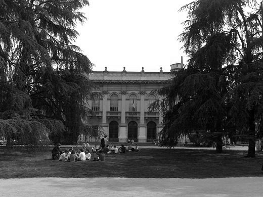

Il Politecnico di Milano (acronimo PoliMi) è un istituto universitario italiano di carattere scientifico e tecnologico, fondato nel 1863. I campi di studio e ricerca comprendono le tre macro-aree ingegneria, architettura e disegno industriale.
Ha sede nella città di Milano, nei due plessi Bovisa e Città Studi, ed ha sedi decentrate a Como, Cremona, Lecco, Mantova e Piacenza e in Cina
